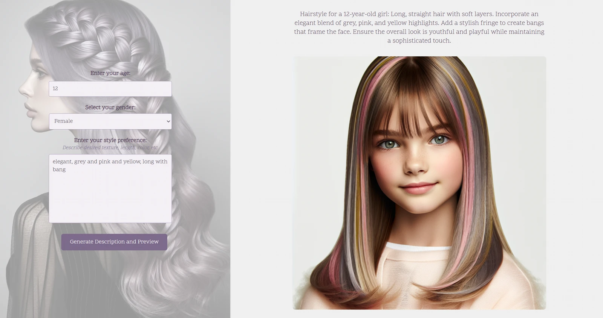
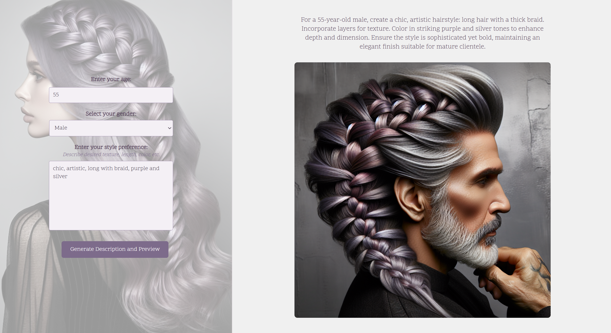
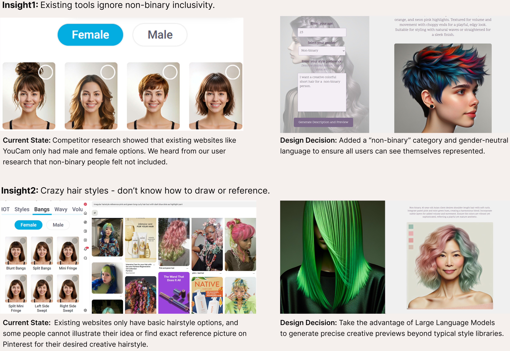
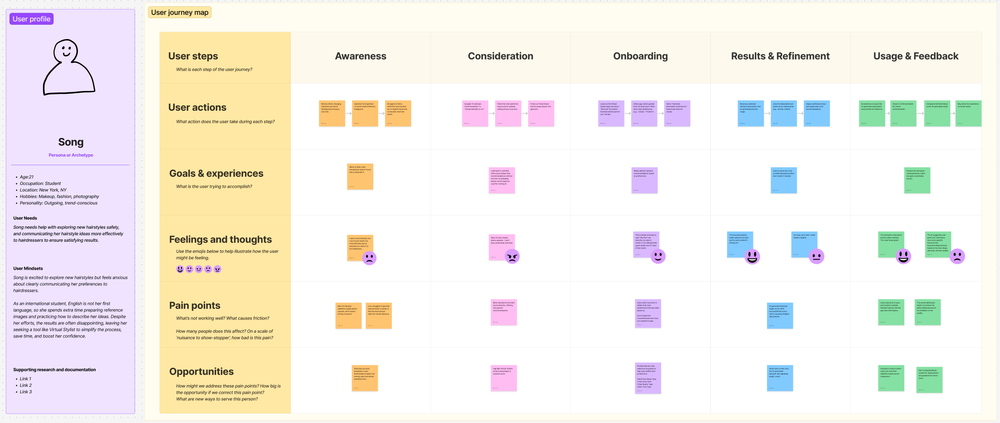
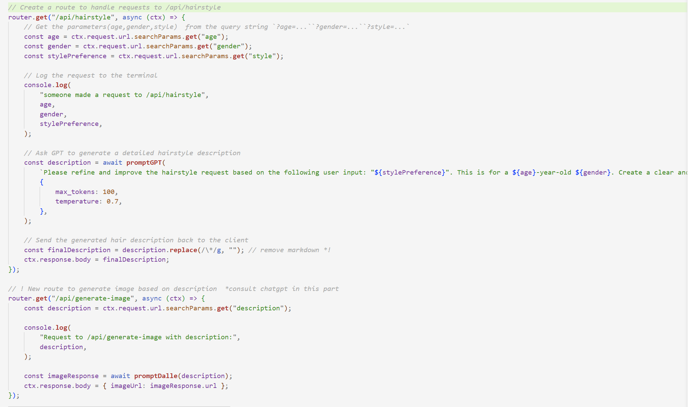
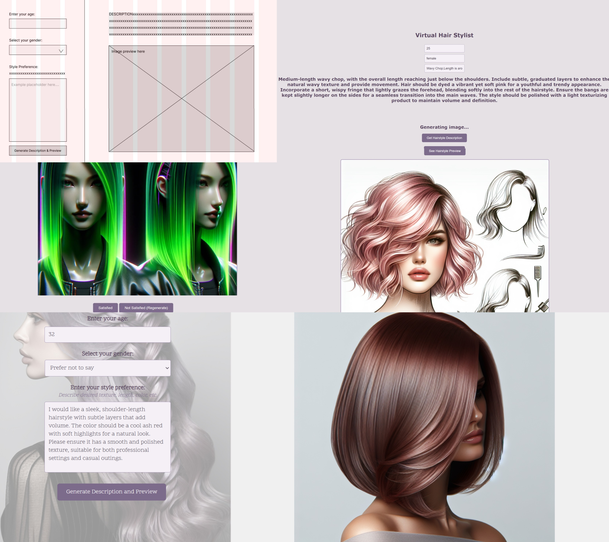
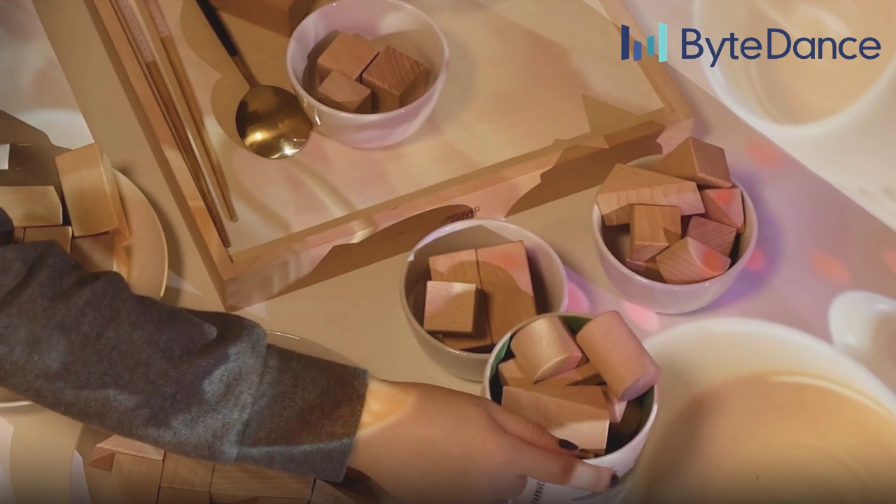
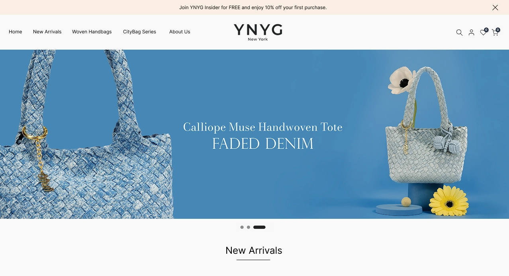
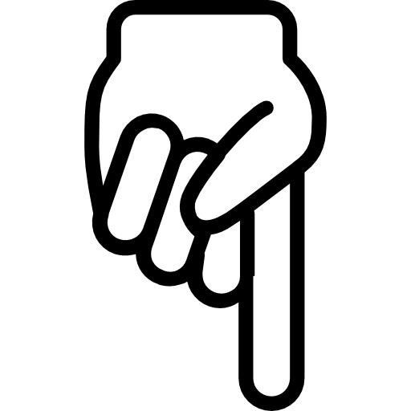

Selectable Preferences
Choose instead of typing.
AI PRODUCT · WEB DEVELOPMENT · INCLUSIVE DESIGN
A photo-free AI styling experience helping users explore hairstyles with greater privacy, flexibility, and inclusivity.

Existing AI styling apps often rely on user photos, raising privacy and inclusivity concerns related to gender and ethnicity. I wanted to create a gender-inclusive, photo-free styling experience that lets users explore hairstyles without uploading personal images.
Hairstyle visualization often requires users to upload personal photos before they can explore different looks.
Existing tools can reinforce narrow assumptions around gender, appearance, and who styling experiences are designed for.
The article Life as a Trans Bitmoji inspired my exploration of digital self-representation. It shows how a virtual avatar can help someone express identity shifts before they happen in real life.
Similarly, anime fan art communities reveal the importance of visualization for people who rarely get to see themselves represented.
I built a photo-free system using HTML, CSS, JavaScript, and OpenAI APIs. Instead of uploading an image, users enter attributes such as age, gender identity, and style preferences to generate personalized hairstyle recommendations.
Generate detailed hairstyle recommendations based on the user's preferences and identity.
Translate the recommendation into an AI-generated preview without requiring a personal photo.


Synthesized insights from interviews and competitor analysis, particularly YouCam, and defined pain points around gender inclusivity and data privacy.

Developed the app with HTML, CSS, JavaScript, TypeScript, a Deno backend, and OpenAI APIs. I iterated on prompts to improve the relevance and accuracy of generated results.

Built and tested wireframes in Figma and functional prototypes in the browser.
Testing led me to support input rewriting and real-time regeneration, giving users more control over how they explored different styles.

2026 · AI-ASSISTED ITERATION
Choose instead of typing.
Save and revisit favorite styles.
Account for existing hair characteristics.
I used Claude and Lovable to rapidly explore new interactions and possible improvements.
Exploratory concepts · Not included in the live app yet
When demographic details were unspecified, generated previews often defaulted toward young white women.
Better AI UX isn't always about automating more decisions.
WHAT I LEARNED
I became more intentional about how gender options are framed, which defaults appear first, and how prompts influence generated results.
This project also reshaped how I approach AI-powered UX: as a balance between user agency, system constraints, and ethical responsibility.


